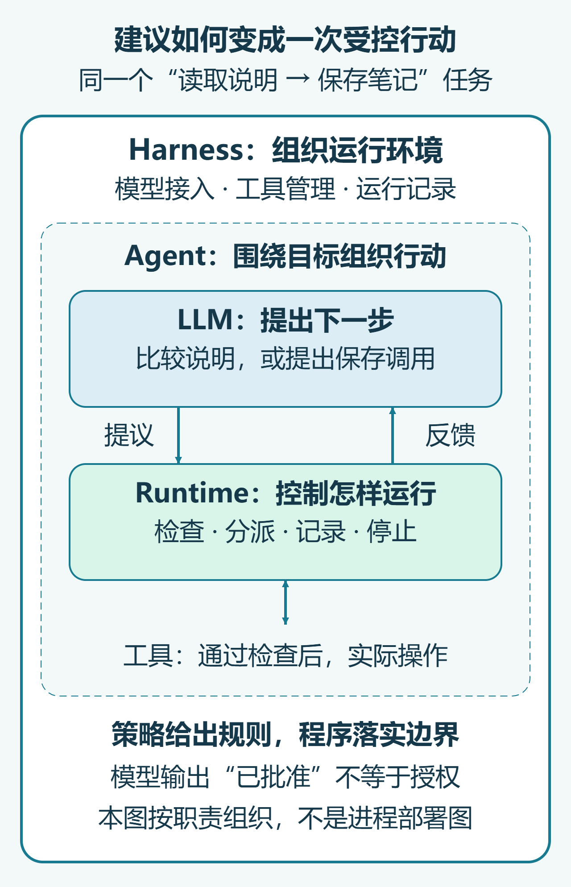
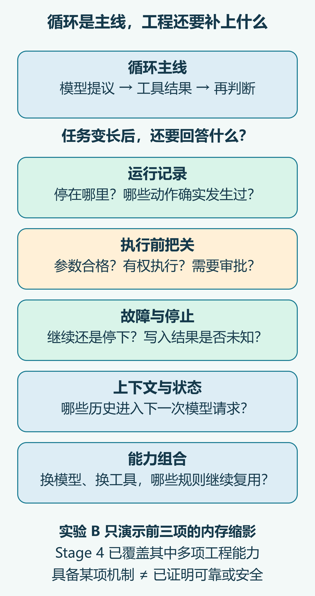
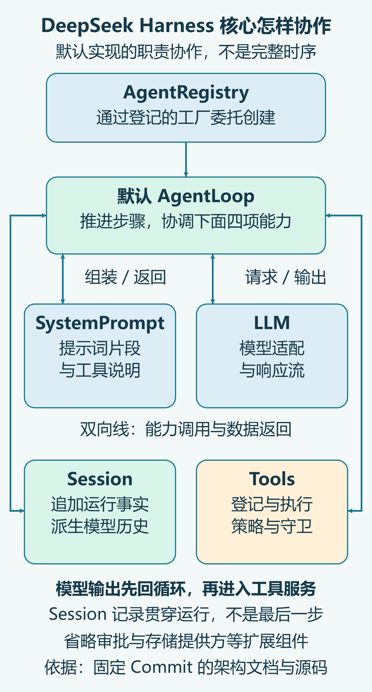

H01 作者审阅页 · 未发布。实际 LessonMarkdown 的静态渲染，折叠答案可展开；课程版本的复制交互已另经 React 挂载测试。图片在本页映射为相邻文件，不改变教材的 /course-media 路径。
为什么有了大模型，还需要 Harness？
80～110 分钟（阅读约 55 分钟，实验与思考约 25～55 分钟）
笔记已经写好了，为什么任务还可能没做好？
你让研究助手读取两份公开部署说明，比较差异，再保存一篇笔记。模型很快给出了条理清楚的内容，还提出调用 save_note。到这里，事情只完成了一半：用户批准保存了吗？程序保存的是用户刚看到的那份内容吗？如果保存后网络断开，重新点一次会不会多出一篇？
这些问题不能只靠“请谨慎操作”这句提示词解决。模型可以提出下一步，真正执行下一步的程序还需要依据规则作判断，并留下可以核对的结果。
本课从你在 Stage 4 做过的 Agent Loop（智能体循环）出发，逐步读到 DeepSeek Harness 的几个核心入口。这里不安装整个仓库，也不先背插件系统的术语。课末，你要能回答一个具体问题：更换一个模型，为什么不会自动补上审批、运行记录和故障处理？
本课所有官方实现都锁定在提交版本（Commit）f3803c96974ad4a94195fb97e5c637e9c2a3afe3。文中标记为官方实现的是该版本能核对的事实；教学简化用于建立直觉；我们的分析是对收益、成本和适用场景的判断。
用五分钟找回 Stage 4 的那条循环
先回想最早的只读工具实验。用户提问，程序把问题与可用工具说明交给模型。模型可能直接回答，也可能返回一个工具调用提议。程序检查工具名和参数，执行允许的工具，再把结果交回模型。如果模型继续提出工具调用，就继续；遇到结束、上限、预算耗尽或取消，就停止。
下面只保留这条主线，是教学伪代码，不是官方 API，也不是 Stage 4 完整实现：
在上限内重复：
提议 = 请求模型(历史, 可用工具说明)
如果提议是最终回答：结束
检查工具名、参数和执行条件
结果 = 执行允许的工具(参数)
把工具结果放回历史模型负责提出“读这份说明”或“保存这段文字”；程序负责判断这个工具是否存在、参数是否合格、当前是否允许执行、还要不要继续。工具则完成一次具体操作，例如读取一条记录。参数符合格式与用户有权执行，是两回事。 一个合法的文件路径，仍然可能指向用户无权读取的文件。
Stage 4 并没有停在这几行伪代码：4.3 加入写入审批；4.6 把任务（Run）、步骤（Step）与待确认动作（Action）存进数据库，并通过事务与唯一约束处理同一个动作的重复确认；4.7 用固定案例核对行为。你已经接触过 Harness 要解决的一部分问题。现在要研究的是：当能力、模型、入口与运行场景继续增加时，这些机制怎样组织，才能避免每处各写一份。
想深入再看：基础回顾：没有学过原课也可以继续
一次模型请求，输入是消息和能力说明，输出可能是回答或结构化工具提议。输出本身不会调用你的函数。执行程序需要将提议对应到已登记的工具，检查输入，再决定是否调用；工具结果成为下一次模型请求的输入。这种“观察结果后再决定”的重复过程，就是这里说的 Agent Loop（智能体循环）。循环也可以第一轮就回答，不必为了显得智能而强行用工具。
持久化是把运行状态写进重启后仍能读取的存储；内存数组不具备这个性质。审批是执行条件之一，不是模型说“用户已批准”就算完成。重复确认只产生一条业务结果，还需要稳定动作身份和存储侧约束；按钮变灰不足以证明它。
已有原课权限时，可以选读 4.1 受限 Agent Loop、4.3 写操作审批、4.6 持久化与恢复。这些入口沿用原有访问权限；本课的解释与实验不依赖打开它们。
四个词，放进同一件事里理解
LLM：能给出下一步建议，还没有替你执行
大语言模型（LLM）解决的是“根据已有输入生成什么响应”。在我们的案例中，它可以比较说明、组织笔记，也可以输出“调用 save_note，参数是这段内容”。
可以把它想成研究助理：看完资料，告诉你接下来该做什么。严格一些说，本课讨论的模型通过模型服务接收消息，生成文本、工具调用等输出；是否把这些输出接到外部工具，由宿主程序决定。这个类比只解释职责：模型没有人类助理天然拥有的身份与权限，也不因为写出一句话就取得系统授权。
**官方实现：**默认循环先从助手消息中取出 tool-call，再调用工具服务。没有工具调用时可以结束；有调用时，由程序分派。证据在 step() 的工具分支，586–597 行。这证明“生成工具提议”和“执行工具”在代码里是两个环节，不能把模型输出当作已经发生的操作。
先判断一下：模型在回答里写了“笔记保存成功”，你会检查自然语言，还是工具的实际结果？稍后用实际工具次数和笔记数量，核对提议与执行的区别。
Agent（智能体）：围绕任务把判断与行动接起来
Agent 解决的是“怎样根据目标和新观察继续行动”。研究助理提出先读资料，程序执行读取；模型看到结果后修改笔记，再提出保存。这里已经形成反馈，而不只是一次问答。
本课用 Agent 指一个围绕目标，把模型决策、工具行动与反馈组织起来的系统；一次运行也可能直接回答。这个概念是教学定义，不要求所有 Agent 都有同一种循环或同一套软件结构。在 DeepSeek Harness 源码中，Agent 还指有具体接口的运行实例，要结合它的上下文理解。
官方实现：AgentFactory 接口前的注释，169–175 行明确将创建工厂放在 Agent 接口包，使调用方可以使用 ctx.agents，无需依赖具体的默认循环包。先记住“对外接口”和“默认实现”可以分开，不必现在读完创建生命周期。
研究助理的类比不能表示 Agent 一定有独立人格、独立进程或长久记忆。看见一个 Agent 对象，也不能据此推断它拥有所有工具权限。
Runtime：把建议变成受约束的程序行为
Runtime（运行时）在这里解决“这一步究竟怎样执行和停止”。就像工作室里的操作流程：哪台设备可用、是否需要签字、失败后先停在哪里，都不能只由提出建议的人口头决定。
严格地说，本课用 Runtime 指运行过程中承担调度、状态推进、检查、分派与停止等职责的程序机制；它不是特指某一个名叫 Runtime 的类，也不是 JavaScript 运行时环境的同义词。模型建议“保存”，运行程序仍要按照可信策略判断；工具的实现代码负责实际写入。安全策略规定允许什么，执行程序负责在相应边界落实它，模型负责在给定能力内提出行动。
这里常说的“确定性程序规则”，意思是规则由代码与配置定义，例如未获批准不启动写工具；不表示整个系统可完全复现。网络可能超时，外部服务会改变，模型响应也可能不同。
官方实现：ToolExecutionPipeline.prepare()，190–229 行在分派前处理执行策略、可能的审批以及守卫检查。这里的守卫是执行前单独核对的限制条件，策略放行后也要经过它。模型提议的格式正确，并不跳过这些环节。本课只看“执行前有把关”这条边界，流水线的扩展方式留到 H14。
Harness：把运行所需的机制组织成工作环境
Harness 解决的是“怎样把这些执行机制持续、可组合地提供给 Agent”。研究工作室除了助理和一次操作流程，还需要资料柜、工具登记、审批通道、工作记录，以及设备的安装和回收安排。把所有东西临时接在一个循环旁边，短任务可以工作；换一个入口或增加一种工具时，就容易重复规则。
本课把 Harness 理解为围绕 Agent 运行提供控制、状态、能力接入和组合机制的软件环境。它通常包含运行时职责，也包含模型适配、工具管理、会话记录等配套机制；这是帮助阅读的术语约定，不是四个词都有全球统一且互斥的边界。 同一个仓库可能把多种职责放在一个包中，模型服务也可能在远端。
**官方实现：**DeepSeek Harness 的 README 5–15 行说明它是开源 agent harness，基于 Cordis 的插件架构；架构文档 7–11 行进一步说明，模型适配器、工具注册表、会话日志，连默认 Agent Loop 本身也都是插件。

顺着图读一遍：模型提出保存，Runtime 先检查，工具才写入；工具结果又返回到后续判断中。Harness 提供这一组机制的组织方式。它不会因为套在外层，就保证模型判断正确或工具绝对安全。
想深入再看：参考答案：提议、规则、执行与组合
比较内容主要依赖模型生成与推理，准确性仍需证据核查。保存权限由可信身份和程序策略判断，不能让模型自行宣称有权。真正写入由工具实现完成，调用必须经过运行程序的边界。更换模型服务而保留审批与记录，要求把模型接入、工具执行和会话机制通过清楚的接口组织起来，这属于 Harness 的组合能力。
这些是职责分工，不要求一定对应四个进程或四个类。Runtime 可以属于 Harness；Agent 是整个任务行为的组织者，不能简单等同于其中那一次模型调用。
当任务从两分钟变成两小时
假设助理读取第一份说明成功，第二份失败。你希望它告诉你停在哪里，不能把不完整比较标成完成。又假设任务运行很久，早先的说明逐渐放不进模型上下文；随意删掉前半段，可能把用户明确禁止的操作一起丢掉。再换成另一个模型，消息和工具能力也可能不同。此时“再写一轮 while”并不能描述你需要的全部机制。
下面这些是同一个研究任务继续增长时出现的问题。**我们的分析：**它们说明为什么要把运行能力作为独立工程问题，而不是证明每个项目都必须使用现成框架。
| 实际问题 | 运行环境需要提供什么 | 不能顺手推断什么 |
|---|---|---|
| 不知道停在第几步 | 可关联的运行事实与状态 | 有日志就已经落盘并可恢复 |
| 模型提议保存私人内容 | 参数校验、身份授权与必要审批 | 参数合法就有权执行 |
| 保存后没有收到成功响应 | 区分已知失败与结果未知，按工具性质设计恢复 | 捕获异常就自动撤销写入 |
| 长任务超出上下文 | 记录来源，控制进入请求的历史与上下文 | 压缩后信息一定完整 |
| 模型或工具不断增加 | 明确的接口、注册和能力适配 | 接口相同就行为完全一致 |
| 多入口重复使用能力 | 可组合的服务与明确的资源生命周期 | 插件互不影响或天然隔离 |
这些能力可以逐项写进自己的程序。Stage 4 正是在这样做。困难是：当同一种审批规则在命令行、网页和子任务各实现一次，规则可能逐渐分叉；当循环直接绑定某个供应商的响应字段，更换模型可能牵动工具执行代码。Harness 的价值在于为它们提供组织和扩展方式；是否值得采用，还要比较学习、配置和维护成本。

看图中的工程问题时，别把每一项都理解成“必须装一个新插件”。它首先是一份问题清单。日志写在内存还是持久存储，哪些工具需要人工批准，恢复能否重试，都要由具体实现和配置回答。
在真实仓库中找到这条分工线
现在才打开源码。先读文档里的模块表，再找接口，再看默认实现中的两个分支。这样不会一上来陷进数百行循环状态代码。
第一站：读文档，先建立职责地图
依次打开 README 的定位与预览说明、安全说明，然后读架构文档的核心包表，55–65 行。本课先把 Cordis 当作负责挂载插件、提供服务和扩展点的底层框架；它的 Context、依赖与生命周期会在 H05–H07 展开。
官方实现的模块分工如下。ctx.xxx 是代码访问服务的入口写法；看到它，先问“这里在借用什么能力”，不必先研究 Context 内部。
| 服务入口 | 在研究笔记任务中做什么 | 核心包 |
|---|---|---|
ctx.agents | 对外提供 Agent 注册与创建入口 | core/agent |
ctx.agentLoop | 提供默认循环驱动 | core/agent-loop |
ctx.systemPrompt | 组装提示词片段与工具说明 | core/system-prompt |
ctx.llm | 接到模型适配器的调用边界 | llm/llm |
ctx.tools | 管理工具并通过流水线执行 | core/tools |
ctx.sessions | 管理会话；会话保有仅追加的事件日志 | core/session |

图中没有“LLM 直接调用写工具”的箭头。模型输出先回到循环，再进入工具服务。Session 也没有被画成唯一终点：循环在运行中记录事实，并从中取得下一次模型所需的历史。分工图省略了审批提供方、持久化提供方、插件生命周期和多种错误分支；它不是完整依赖图。
第二站：从创建接口看“使用者不必绑定实现”
打开 packages/core/agent/src/index.ts 的 169–175 行，找到 AgentFactory；再读 AgentRegistry.create() 的 407–425 行。
输入是创建选项，输出是一个管理该 Agent 的 handle（句柄）。中间通过已登记的工厂委托创建。现在不追踪所有权、回滚或清理细节，只回答：调用者为什么不必自己 new 默认循环？因为接口把“请求创建 Agent”与“选哪一种具体实现来创建”分开了。这是源码注释直接说明的边界，而不是我们猜测的设计动机。
第三站：在默认循环里看见“提议转交给执行服务”
打开 packages/core/agent-loop/src/agent.ts 的 step()，435 行。先只扫函数结构，再跳到 586–597 行。
你要找到三个动作：从模型消息提取工具调用；没有调用时返回完成；有调用时进入 this.loopCtx.tools.execute(...)。输入是已经得到的模型消息与当前执行状态，输出是本步的结束或继续信号。复杂调度条件在 H10 再读，本课只确认分派边界。完成信号描述程序状态，任务结果是否正确仍需要核对。
第四站：顺着调用，看到工具执行前的门
接着读 packages/core/tools/src/pipeline.ts 的 prepare()，190–229 行。输入是工具执行请求；程序建立执行上下文，处理执行前策略。如果需要询问，则进入审批处理；获准后仍要检查守卫和取消条件。满足条件才返回 dispatch，否则产生拒绝或停止结果。
别把这段概括成“所有工具都弹窗”。需要审批与否来自策略决定。也别认为“审批服务没接好就默认同意”：serviceAsk() 的 432–469 行明确处理没有审批服务、没有可路由 Agent、用户拒绝和通道不可用等情形。这些情形会拒绝，不会变成授权。
到这里，核心阅读共三个源文件。先用一句话连接它们：创建通过接口委托；默认循环协调模型与工具；工具服务在执行边界落实规则。 不需要一次读完所有函数。
两个辅助入口：模型与记录在哪里？
如果图中还有空白，再选读下面两处，各花两三分钟，只辨认输入和输出。
在 packages/llm/llm/src/index.ts 的 LlmRuntime.prepareCall()，960–975 行，根据 provider、model 取得适配器并准备调用。Provider 是模型服务提供方，Adapter 是把它接到框架接口的适配实现，类似统一插座与转换接头；接得上不表示各模型的工具能力、默认参数或行为都相同。这里的类名含 Runtime，专指 LLM 服务实现，不等于我们前面讨论的全部运行职责。
在 packages/core/session/src/index.ts 的 Session.append()，806–833 行找到按类型追加事实的入口，再看 deriveMessages()，999–1019 行：它根据会话中保留的有序消息节点派生模型历史。像工作日志与给助理看的摘要有联系，但不能说二者相同。追加内存事件不等于已完成磁盘持久化；存储提供方的职责另在架构文档 126–134、170 行说明。H17 再深入事件日志与模型视图的区别。
想深入再看：源码旁边的测试，也是一种阅读材料
先读 Tools 测试 788–840 行：找到执行前拒绝，以及需要审批但未挂载审批服务的用例。再看 Session 测试 32–74 行，比较记录的事件与派生消息。
不要求现在安装依赖运行它们。阅读测试时先找输入、执行动作、断言，而不是记测试框架写法。本课对这些官方测试做静态核对；后面的自动运行属于我们的独立 Mock 实验，不冒称官方全套测试通过。
为什么这里选择插件化？
先把 Plugin（插件）理解成“一块可以挂载到系统、按约定提供能力并参与运行的代码”。像工作台可以换装设备：你可以更换模型接头，同时保留笔记保存和审批流程。但软件插件不像物理设备天然分隔；它可能共享进程、访问宿主资源，错误也可能影响系统。
官方实现：架构文档 7–11 行把插件描述为向共享上下文贡献服务、类型化事件与可逆副作用的单元。这里“可逆”主要指框架登记的扩展效果可在卸载时撤销，不能理解成插件写过的文件都能自动恢复。连默认循环也可以由配置替换，因此不该把它画成不可替换的特权内核。
**我们的分析：**把消费接口与提供实现分开，能减少更换模型或工具后端时的连带修改；把审批挂在公共执行边界，可以减少重复实现。这些收益都有条件：接口契约要清楚、扩展点要正确使用、测试要覆盖替换后的行为。代价是学习组合规则、处理依赖与生命周期，以及追踪“这次行为来自哪个插件”。官方没有说明的具体选择原因，本课不替作者推断。
插件化不是能力越多越好，也不代表默认配置里启用了所有能力。锁定版本的组合说明 15–25 行已经展示不同入口的组合存在差异。H04、H08 再回答一次实际启动装进了什么。
实验：模型不变，只更换执行程序
我们缩小研究任务：读取一份虚构公开说明，再提出保存笔记。两组实验使用同一个 mockModel，用固定程序模拟模型的选择，这种替代方式称为 Mock。它根据收到的工具结果选择下一步；没有真实模型、网络、文件写入或数据库。工具 save_note 只把文字放进内存数组，进程结束就消失。
教学简化 A 故意删去参数校验、审批、运行日志和受控错误结果，只保留模型与工具反馈及四次上限。它是用于比较的删减版，不能代表 Stage 4 最终作品。
教学简化 B 加入工具白名单与小型参数检查、宿主提供的审批决定、顺序内存日志，以及失败后停止。它也不是 DeepSeek Harness 的缩小源码：没有 Cordis、持久会话、跨进程恢复、并发、真实取消、生产权限或业务幂等。
先预测，再运行
在自己的练习位置新建一个空文件夹 h01-mock-lab，用编辑器创建 compare.mjs。下面折叠区给出完整程序，无需安装依赖；沿用前阶段可用的 Node.js，或使用 Node.js 20.19 及以上。本实验不要求官方仓库的构建环境。
想深入再看：完整可运行程序：复制到 compare.mjs
下面全部是我们的教学代码。approve 由宿主实验传入，模型输出不能替代它；wait 表示本次模拟停在等待状态。批准案例会从全新内存重新运行，不是恢复刚才那个等待中的任务。
// 教学简化：不是 DeepSeek Harness API。只操作虚构资料和内存数组。
import { pathToFileURL } from 'node:url';
import assert from 'node:assert/strict';
export const PUBLIC_TEXT = '公开部署说明：先检查构建，再检查健康状态。';
// 同一个 Mock 根据工具结果决定下一步；不调用模型服务。
export function mockModel(history) {
if (!history.length) return { tool: 'read_public', args: {} };
const last = history.at(-1);
if (last.tool === 'read_public') {
return { tool: 'save_note', args: { text: `部署笔记：${last.result}` } };
}
return { done: true };
}
export function makeWorld({ readFails = false, failAfterWrite = false, text = PUBLIC_TEXT } = {}) {
const notes = [];
const calls = [];
return {
notes, calls,
tools: {
read_public() {
calls.push('read_public');
if (readFails) throw new Error('READ_FAILED');
return text;
},
save_note(args) {
calls.push('save_note');
notes.push(args.text);
if (failAfterWrite) throw new Error('RESPONSE_LOST_AFTER_WRITE');
return 'SAVED';
},
},
};
}
// A 故意删去校验、审批和运行日志；保留次数上限，避免教学代码无限运行。
export async function minimal(world, model = mockModel) {
const history = [];
for (let n = 0; n < 4; n++) {
const proposal = await model(history);
if (proposal.done) return { status: 'completed' };
const result = await world.tools[proposal.tool](proposal.args);
history.push({ tool: proposal.tool, result });
}
return { status: 'limit' };
}
function checked(proposal) {
if (!proposal || !['read_public', 'save_note'].includes(proposal.tool)) {
throw new Error('UNKNOWN_TOOL');
}
const args = proposal.args;
if (!args || typeof args !== 'object' || Array.isArray(args)) throw new Error('BAD_ARGS');
const valid = proposal.tool === 'read_public'
? Object.keys(args).length === 0
: Object.keys(args).length === 1 && typeof args.text === 'string'
&& args.text.trim().length > 0 && args.text.length <= 200;
if (!valid) throw new Error('BAD_ARGS');
return Object.freeze({ tool: proposal.tool, args: Object.freeze({ ...args }) });
}
// B 的审批输入来自宿主测试代码，不来自模型。每次运行都是新实验，不实现恢复。
export async function controlled(world, { approve = () => 'wait', model = mockModel } = {}) {
const history = [];
const log = [];
const record = (type, tool) => log.push({ seq: log.length, type, ...(tool ? { tool } : {}) });
const finish = (status) => { record(status); return { status, log }; };
record('started');
try {
for (let n = 0; n < 4; n++) {
const proposal = await model(history);
if (proposal?.done === true) return finish('completed');
const call = checked(proposal);
record('proposed', call.tool);
if (call.tool === 'save_note') {
const decision = await approve(call);
if (decision === 'wait') return finish('waiting_approval');
if (decision !== 'allow') return finish('denied');
record('approved', call.tool);
}
record('tool_started', call.tool);
const result = await world.tools[call.tool](call.args);
record('tool_succeeded', call.tool);
history.push({ tool: call.tool, result });
}
return finish('limit');
} catch (error) {
record('failed');
// 本例工具只抛固定错误码；不把真实外部错误原文写入日志。
return { status: 'failed', error: error.message, log };
}
}
export async function demo() {
const cases = [
['A 最小循环', minimal, {}, 'completed', 1, 2],
['B 等待审批', controlled, {}, 'waiting_approval', 0, 1],
['B 宿主批准', w => controlled(w, { approve: () => 'allow' }), {}, 'completed', 1, 2],
['B 读取失败', controlled, { readFails: true }, 'failed', 0, 1],
['B 写后报错', w => controlled(w, { approve: () => 'allow' }), { failAfterWrite: true }, 'failed', 1, 2],
];
for (const [name, run, options, status, notes, calls] of cases) {
const world = makeWorld(options);
const result = await run(world);
console.log(`${name} | ${result.status} | 笔记=${world.notes.length} | 工具=${world.calls.join(',')}`);
if (name === 'B 等待审批') console.log(result.log.map(e => `${e.seq}:${e.type}`).join(' → '));
assert.equal(result.status, status);
assert.equal(world.notes.length, notes);
assert.equal(world.calls.length, calls);
}
console.log('PASS：5 组状态与实际效果检查');
}
if (process.argv[1] && import.meta.url === pathToFileURL(process.argv[1]).href) await demo();在编辑器终端进入这个新文件夹，确认能看到 compare.mjs，运行一条命令：
node compare.mjs程序应打印五组结果，最后显示 PASS：5 组状态与实际效果检查。它会自动断言状态、实际调用数和笔记数，不一致时抛错并以非零退出码结束。每组都使用新的内存世界，只有故障和审批条件变化。
| 案例 | 最终状态 | 读取 / 写入调用数 | 内存笔记数 |
|---|---|---|---|
| A 最小循环 | completed | 1 / 1 | 1 |
| B 等待审批 | waiting_approval | 1 / 0 | 0 |
| B 宿主批准 | completed | 1 / 1 | 1 |
| B 读取失败 | failed | 1 / 0 | 0 |
| B 写后报错 | failed | 1 / 1 | 1 |
等待审批案例还会打印一条按序号排列的日志：开始、读取提议、工具开始、工具成功、保存提议、等待审批。提出保存并不是已经保存；你应能在日志中找到“有提议，没有写工具启动”的边界。
看懂 B 中真正改变结果的几行
下面是教学程序的原样摘录。它没有让 Mock 变聪明；它改变的是建议怎样进入执行。
if (call.tool === 'save_note') {
const decision = await approve(call);
if (decision === 'wait') return finish('waiting_approval');
if (decision !== 'allow') return finish('denied');
record('approved', call.tool);
}
record('tool_started', call.tool);
const result = await world.tools[call.tool](call.args);未得到宿主的 allow，代码不会走到写工具。模型即使多输出一个 approved: true，也不能替代这个返回值。工具名和参数在到达这里前已经过检查，批准看到的参数也被复制、冻结，避免示例中批准后再偷换文字。它只保护这个内存实验中的简单参数；真实审批仍需身份、动作绑定、时效、重复消费等设计。
第四组读取失败时，程序停止后续模型与工具调用，给出明确失败状态；它没有自动重新请求，也没有用空资料假装完成。第五组更关键：笔记已加入数组，然后才抛错，所以状态是 failed，笔记却有一条。异常处理能控制后续流程，不能凭空撤销已经发生的副作用。 真实系统遇到“写入可能完成但响应丢失”，需要核对业务结果或依靠事先设计的幂等机制，不能看到报错就盲目重写。
想深入再看：进阶核对：让自己的解释可以被推翻
将 PUBLIC_TEXT 换成另一条虚构说明，重新运行，A 和 B 批准路径中保存的文字应随读取结果改变。这证明 Mock 确实使用了工具反馈，而不是只按预设顺序打印“成功”。
再把批准案例的 allow 改为 reject，预期写工具调用变成 0，最终状态为 denied。程序固定检查原始五组，因此这次故意变更会触发断言并非零退出；先从输出核对拒绝效果，再恢复代码，重新得到五组 PASS。只改模型返回值中的文字，不应绕过宿主审批。
随课实验源码另附 compare.test.mjs，两个文件同目录时可执行 node --test compare.test.mjs，继续检查未知工具、非法参数、拒绝审批和次数上限。只复制正文中的完整程序，也能自动核对五组主案例，并完成上面的两项变更。自动测试核对工具调用和内存结果，不能证明真实模型、磁盘恢复或生产安全。
三道题，把架构判断说具体
想深入再看：参考答案一：批准来自可信执行边界
模型输出是待验证的提议，不能作为用户授权凭据。运行程序需要可信的身份与审批结果，再根据工具策略和守卫决定是否分派；符合参数格式不能替代授权。
官方 prepare() 先处理执行前策略，遇到 ask 才交给 serviceAsk()；即使得到 allow，后面仍检查 guards。serviceAsk() 在审批服务或通道不可用时拒绝。因此不能拿“流程需要继续”当作新增权限的理由。教学 B 的宿主回调只演示这条分工，没有实现官方审批服务，更没有实现 Stage 4 的签名或持久化动作。
想深入再看：参考答案二：先确定发生过什么
只读失败通常不会新增业务笔记，但仍要检查工具性质、预算和重试条件；不能把本例的内存读取推广到所有所谓“读取”。写后响应丢失时，程序可能不知道外部操作是否成功，重试可能产生第二条记录。实验第五组直接展示了“返回失败但效果已发生”。
内存日志随进程消失，而且记到 tool_started 没有成功结果时，不能单凭它判断外部世界有没有写入。真实方案需要稳定动作标识、可查询的业务结果，以及适合该工具的幂等或事务设计。Stage 4.6 对同一 Action 的数据库写入做了专门约束，不意味着所有外部 API 都自动只有一次效果。H18、H20 会继续区分历史恢复和外部效果恢复。
想深入再看：参考答案三：接口减少连带修改，但不会消除差异
这暴露了多个消费方与具体供应商格式的耦合。可以在模型适配边界把专有响应接到框架约定，让工具和审批依赖稳定的调用与执行接口。官方将模型适配器、工具服务和默认循环分别做成可组合插件，AgentFactory 注释也直接说明消费者无需依赖默认循环包。
我们的分析是：这能缩小更换提供方的影响范围，但必须验证工具能力、参数默认值、流式事件和错误语义是否匹配，还要处理插件依赖、加载与资源回收。插件不是一层能消除所有兼容差异的魔法。此处是工程判断，不宣称替作者还原了全部设计动机。
临走前，纠正几种容易带走的误解
| 容易说出口的话 | 更准确的说法 |
|---|---|
| Harness 就是一段更长的系统提示词 | 提示词影响提议；Harness 还组织执行、状态、能力接入与扩展机制 |
| Agent 就是一次模型调用 | 本课的 Agent 围绕目标组织判断与反馈；某次运行可以直接回答 |
| 确定性代码让整个系统确定 | 程序定义检查与状态规则，模型和外部系统仍可能不确定 |
| 有日志就能恢复，报错就没写 | 要分别核对持久化、恢复边界，以及外部操作是否已发生 |
| 插件化和沙箱已经证明安全 | 插件化解决组合；隔离和安全必须单独核查，该版本尚未经过安全审计 |
| Harness 取代了 Stage 4 所学 | Stage 4 的提议、校验、审批、持久化与评估是继续阅读的基础 |
带着一张地图进入 H02
回到最初的研究任务：LLM 提出如何比较、调用什么工具；运行程序检查并推进步骤；工具产生实际效果；Harness 把模型、循环、工具、状态和扩展方式组织起来。更换模型不会自动补出审批，补一段 catch 也不会自动得到安全恢复。
本课在真实代码里只走了一条边界线：AgentFactory 把接口与创建实现分开，默认 step() 将提议交给工具服务，prepare() 在执行前落实规则；模型适配与会话服务提供另外两块支撑。你不需要此刻记住全部包名，只需要能解释这些边界解决的问题。
进入 H02 前，留一份六行笔记：创建入口、默认循环、提示词、模型、工具、会话分别对应哪个服务；任选一行记下刚读到的文件与符号。H02 将沿这张地图学习如何在大型仓库中，从文档找到接口、实现与测试。下一课再展开仓库导航，本课到这里停下。